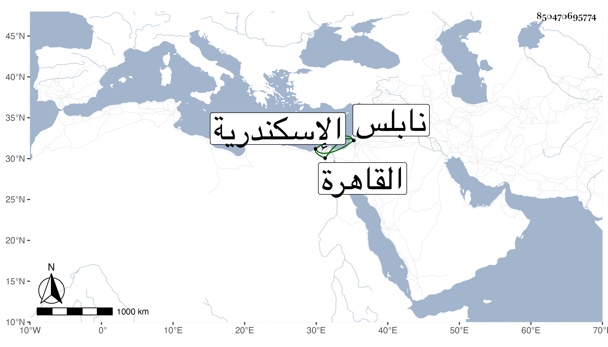

0902Sakhawi.DawLamic.ITO20230111-ara1.EIS1600.850470695774
Biography ID: 850470695774
129
محمد بن عبد القادر أحد مشايخ نابلس وأظن عبد القادر جدله أعلى . عزله الظاهر جقمق عنها بابن عمه وحبسه باسكندرية فاستمر إلى سنة ثمان وخمسين فاحتال بلبس زي النساء حتى خرج من محبسه ولا زال يستعمل الحيل حتى وصل لنابلس فانضم إليه جماعة من عشيره وخواصه وطرق ابن عمه المشار إليه فاصطدما فقتل هذا هو وجماعة ممن معه وأرسل برأسه فكان وصولها القاهرة في يوم الخميس رابع عشري شوال منها فسر السلطان بذلك وأمر فطيف بها في شوارعها على رمح ثم علقت أياما .
